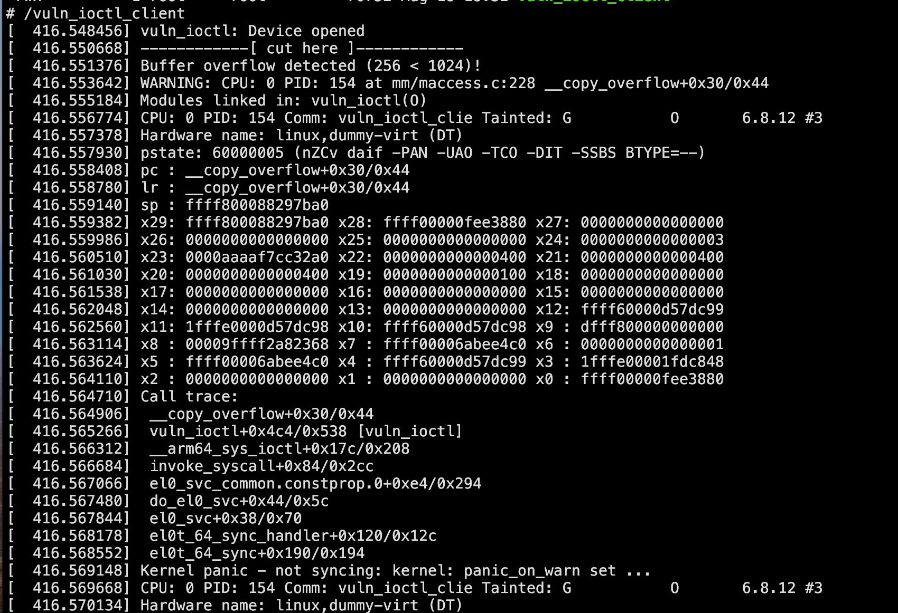
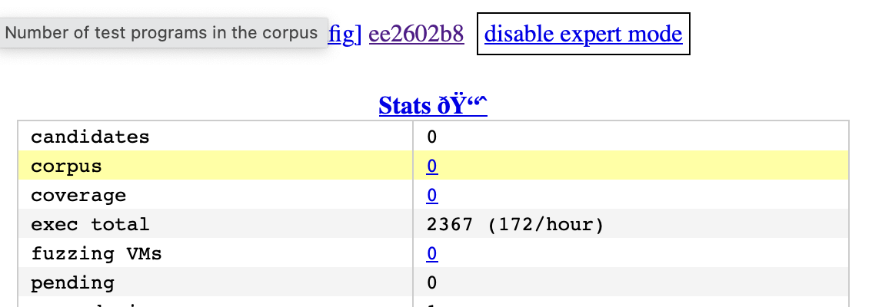
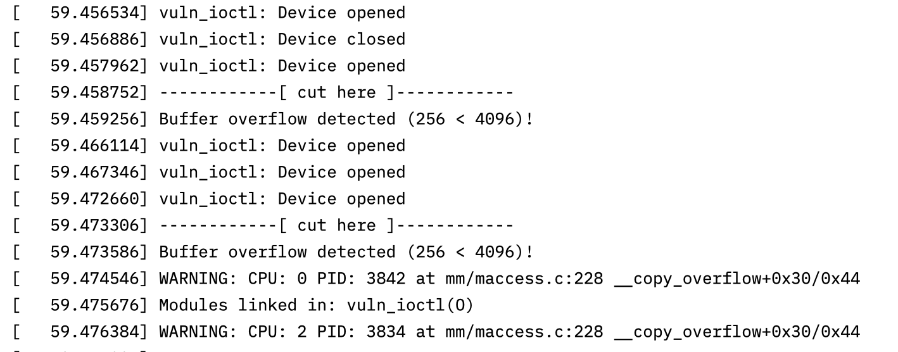

Finding Bugs in Kernel. Part 1: Crashing a Vulnerable Driver with Syzkaller

syzkaller is one of the best fuzzers for the Linux kernel. It supports coverage (through KCOV) and provides a way to declaratively describe syscalls you want to fuzz. It also highly encourages you to use KASAN (and you can even use more sanitizers supported by the kernel). We got to know KASAN in the previous post and it’s a really good thing that allows you to catch more bugs during fuzzing.
Linux has around 450 syscalls, which at first glance might not seem like a lot of attack surface to fuzz. But actually, the attack surface is huge because those syscalls provide you with communication channels to numerous kernel subsystems. Even the simplest syscall open has a different implementation for every filesystem driver, every node under /dev, and so on. That’s why syzkaller’s system call descriptions, although vast, still don’t cover every last bit of the attack surface.
Another good thing about syzkaller is that, unlike a lot of tools out there, it runs not just on the author’s machine, but actually, while the setup is not the simplest, it works perfectly out of the box. The docs even tell you how to set up fuzzing not only for x86_64, but also for arm/arm64, riscv64, and s390x.
{kind=link}
That is, if you’re using Linux to host fuzzing virtual machines. I, in my typical manner, didn’t strive for an easy way out; I wanted to my use macbook to fuzz as it was the most powerful machine in my house and because I simply liked working on it. That was a part of the problem. Another issue was that while syzkaller supports fuzzing kernel modules, my impression is that it’s definetely not the first class citizen and the tool focuses on fuzzing the mainline kernel (at understandably so). In my opinion, third-party kernel modules can present a good target for security research because many of them are not widely adopted and present less incentive for security researchers out there. So, it looked to me like a perfect start for getting into kernel fuzzing.
Setting up vanila syzkaller
The first step is to set up syzkaller with default syscall descriptions, just to make sure everything works. My Mac has an arm64 CPU, so I’m going to need to compile everything for this architecture, and I also need a Linux VM to compile the kernel and build a root filesystem.
Thankfully, I could just follow this guide from the docs to build a rootfs with buildroot and compile the kernel. The only small change is that we don’t need to use cross-compilation and can just compile natively. So, during buildroot configuration, instead of
Toolchain type
External toolchain - Linaro AArch64
select buildroot toolchain. Here, during compilation, I had this weird error: ld: cannot find crti.o: No such file or directory. But the solution was pretty simple—I just used the latest release candidate version instead of LTS/stable and it just worked.
Same for the kernel: omit the CROSS_COMPILE environment variable and don’t change the CONFIG_CROSS_COMPILE option in the kernel .config file. I also needed to install qemu-system. The docs suggest installing from source, but really, QEMU is available in any package manager at this point, so brew install qemu worked just fine.
Then to the compilation of syzkaller ifself. I needed to compile it on my host, macos — or so I thought at the time. syzkaller can be compiled in just 3 simple commands, um…, what?
git clone https://github.com/google/syzkaller
cd syzkaller
make
Makefile:31: run command via tools/syz-env for best compatibility, see:
Makefile:32: https://github.com/google/syzkaller/blob/master/docs/contributing.md#using-syz-env
exit status 1
Makefile:44: *** unknown target darwin/arm64. Stop.
After digging through the docs and Makefiles, I found that when compiling syzkaller, you can specify the OS and architecture for both host and target:
# There are 3 OS/arch pairs:
# - HOSTOS/HOSTARCH: pair where syz-manager will run.
# - TARGETOS/TARGETVMARCH: pair of the target OS under test.
# - TARGETOS/TARGETARCH: pair of the target test process.
#
# The last 2 differ for e.g. amd64 OS and 386 test processes (compat syscall testing).
# All pairs default to the current machine. All but BUILD can be overriden.
#
# For example, to test linux/amd64 on linux/amd64, you just run:
# make
# To test linux/arm64 from darwin/amd64 host, run:
# make HOSTOS=darwin HOSTARCH=amd64 TARGETOS=linux TARGETARCH=arm64
# To test x86 compat syscalls, run:
# make TARGETVMARCH=amd64 TARGETARCH=386
So, I compiled syzkaller with the newly obtained knowledge.
make HOSTOS=darwin HOSTARCH=arm64 TARGETOS=linux TARGETARCH=arm64
************************************************************************************
Executor will not be built
Building executor for linux is not supported on darwin
************************************************************************************
And managed to build all important stuff, but not the executor—this one gets uploaded to the fuzzing VM and executes fuzzing programs, so you know, kind of important. So I fired up my Linux VM once more:
git clone https://github.com/google/syzkaller
cd syzkaller
make
And then I just copied it to the host.
scp sl4v@192.168.65.7:/home/sl4v/linux_kernel/syzkaller/bin/linux_arm64/syz-executor bin/linux_arm64
With everything set up, I wrote this simple config:
{
"name": "QEMU-aarch64",
"target": "linux/arm64",
"http": ":56700",
"workdir": "/Users/sl4v/proj/linux_kernel/syzkaller_workdir",
"kernel_obj": "/Users/sl4v/proj/linux_kernel/linux-6.8.12-builddir/media/sl4v/linux_disk/syzkaller/linux-6.8.12",
"syzkaller": "/Users/sl4v/proj/linux_kernel/syzkaller",
"image": "/Users/sl4v/proj/linux_kernel/rootfs.ext3",
"sshkey": "/Users/sl4v/.ssh/id_rsa",
"procs": 8,
"type": "qemu",
"vm": {
"count": 4,
"qemu": "/opt/homebrew/bin/qemu-system-aarch64",
"cmdline": "console=ttyAMA0 root=/dev/vda",
"kernel": "/Users/sl4v/proj/linux_kernel/Image",
"cpu": 2,
"mem": 2048
}
}
Then I fired it up with syzkaller/bin/syz-manager -config=syzkaller.conf at saw this sweet, sweet

Testing with vulnerable driver
Then it was just a small matter of testing how syzkaller handles out-of-tree kernel modules. Instead of immediately starting with something from real life, I wrote a tiny vulnerable kernel module to test this out in a controlled environment. It has just one communication interface which boils down to:
#define IOCTL_CMD _IOR('v', '1', int32_t*)
struct ioctl_arg{
size_t size;
char data[1];
};
static long vuln_ioctl(struct file *file, unsigned int cmd, unsigned long arg) {
char buf[256];
struct ioctl_arg to;
int res;
switch (cmd) {
case IOCTL_CMD:
res = copy_from_user(&to, (int32_t*) arg, sizeof(to));
if (res !=0 ) {
return -1337;
}
res = copy_from_user(buf, (int32_t*) arg, to.size);
if (res != 0) {
return -1338;
}
if (copy_to_user((int32_t*) arg, &value, sizeof(value))) {
return -EFAULT;
}
pr_info("vuln_ioctl: IOCTL_CMD called, value = %d\n", value);
break;
default:
return -EINVAL;
}
return 0;
The vulnerability here is pretty simple: the code copies the first part of user data. Then it uses size it got from the user (to.size) to as the size of the data to copy. Of course, the copy operation is to the fixed sized buffer. Good enough to bypass compiler checks and it was already on my mind since the last article.
The client was even shorter and looked like this:
int fd = open("/dev/vuln_ioctl", O_RDWR);
struct ioctl_arg* arg;
arg = (struct ioctl_arg*)malloc(1024);
arg->size=1024;
ioctl(fd, IOCTL_CMD, arg);
I compiled the module with KASAN and uploaded it and the client to the QEMU VM. And lo and behold, after ./vuln_ioctl_client we have a nice stack trace followed by a kernel panic. Cool, now the only step left is to repeat it, but with syzkaller.
First, I made it so vuln_ioctl is loaded on every reboot automatically by adding this line to /etc/init.d/S50sshd:
insmod /vuln_ioctl.ko
Reboot, and indeed it worked, perfect.
# lsmod
Module Size Used by Tainted: G
vuln_ioctl 12288 0
Then I had to write a description of the communication interface. It sounds intimidating, but once you find the right doc and start taking inspiration from descriptions that are already there, it’s super simple—at least for this case.
To add a new syscall description, you have to create a file syzkaller/sys/<OS>/your_name.txt. My description was pretty simple and straightforward.
// include files to get constants
include <uapi/linux/fcntl.h>
include <vuln_ioctl.h>
// resource is value that need to be passed from output of one syscall to input of another syscall
resource fd_vuln_ioctl[fd]
// custom version of openat (basically) open syscall for constants necessary for the kernel module
openat$vuln_ioctl(fd const[AT_FDCWD], file ptr[in, string["/dev/vuln_ioctl"]], flags flags[open_flags], mode const[0]) fd_vuln_ioctl
// ioctl desciption for the kernel module
ioctl$IOCTL_CMD(fd fd_vuln_ioctl, cmd const[IOCTL_CMD], arg ptr[in, ioctl_arg])
ioctl_arg {
size len[data, int64]
data array[int8]
}
Notice that the description uses constants AT_FDCWD and IOCTL_CMD, so I needed to add my header file vuln_ioctl.hsomewhere syzkaller is aware of.
# in /media/sl4v/linux_disk/syzkaller/linux-6.8.12
$ cp vuln_ioctl/vuln_ioctl.h ./include/
The next step was to execute make extract so that syzkaller can extract all necessary constants for every relevant architecture and put it into syzkaller/sys/<OS>/your_name.txt.const. Simple enough, but this proved to be the hardest step in the whole endeavour. Everything was done in a Linux VM, so the blame is not on the lack of support for macos.
Here’s a list of what I’ve tried:
make extract TARGETOS=linux SOURCEDIR=/media/sl4v/linux_disk/syzkaller/linux-6.8.12 HOSTARCH=arm64 TARGETOS=linux TARGETARCH=arm64- just a bunch of errors in return.- Recompiling the kernel after each failed
make extractattempt (it turned out thatmake extractdeletes build artifacts). Totally useless asmake extractdoesn’t rely on built files. bin/syz-extract -os linux -arch arm64 -sourcedir /media/sl4v/linux_disk/syzkaller/linux-6.8.12 -builddir /media/sl4v/linux_disk/syzkaller/linux-6.8.12 -vv 10- to extract constants only for arm64. Goterror: ‘KASAN_SHADOW_SCALE_SHIFT’ undeclared. Solved it withmake ARCH=arm64 defconfigin the kernel directory. Also, it turned out thatdefconfigis also necessary after eachmake extractattempt.- Once again
bin/syz-extract -os linux -arch arm64 -sourcedir /media/sl4v/linux_disk/syzkaller/linux-6.8.12 -builddir /media/sl4v/linux_disk/syzkaller/linux-6.8.12 -vv 10only to get‘struct common_audit_data’ has no member named ‘smack_audit_data’. This one is super easy—just addCONFIG_SECURITY_SMACK=yto.config. - And one more time
bin/syz-extract -os linux -arch arm64 -sourcedir /media/sl4v/linux_disk/syzkaller/linux-6.8.12 -builddir /media/sl4v/linux_disk/syzkaller/linux-6.8.12 -vv 10 generating linux/arm64—this time it completes without errors. Yahoo! The next step ismake generate—only to get buried under the avalanche ofsys/linux/blah.txt:332:32: string value "bleh\x00" exceeds buffer length 1. No problem! This behavior was already described in this GitHub issue. The suggested solution wasbin/syz-extract -os linux -sourcedir /media/sl4v/linux_disk/syzkaller/linux-6.8.12 -vv 10 -build vuln_ioctl.txtto extract constants just for one file. It was going well until it started to complain that a bunch of cross-compilers aren’t installed. - Easy-peasy! Just
sudo apt install gcc-s390x-linux-gnu gcc-riscv64-linux-gnu gcc-powerpc64le-linux-gnu gcc-mips64el-linux-gnu gcc-arm-linux-gnueabi gcc-x86-64-linux-gnuand repeat the previous command. To getvuln_ioctl.txt: IOCTL_CMD is unsupported on all arches (typo?). - Everything’s fine. I just copied
vuln_ioctl.hto every possible include directory I could find. To get the same result. straceingsyz-extractto make sure it readsvuln_ioctl.h. Well yeah… it reads it, alright. Just doesn’t want to understand it.- Something so devious my mind decided to wipe it out to make
bin/syz-extract -os=linux -sourcedir=/media/sl4v/linux_disk/syzkaller/linux-6.8.12 -arch arm64 -build vuln_ioctl.txtwork again. And only to makemake generatefail. - At this point, it seemed like
syzkallerdoesn’t want to play ball with the kernel module. But what if I statically compile it into the kernel? I changed the kernel build configuration, included the module in the kernel build process, and compiled it for good measure. Still… the result was the same. - Thankfully,
syzkallerprovides a Docker container and a wrapper around it,syz-env. Unfortunately, the container image in the Google Docker repo was built only for x86_64. Piece of cake! TheDockerfilewas available, so I removed everything that wasn’t needed/was broken on arm64 and rebuilt it. I’ll spare you the details, but it also failed. Some kind of problem withflatbuffers. No idea, probably a mistake on my side.
At this point, I was starting to feel desperate. I wanted to make this work the right way. And the thing was that I did get a generated .const file, but the damn ??? were a total killjoy.
# contents of my vuln_ioctl.txt.const file:
# Code generated by syz-sysgen. DO NOT EDIT.
arches = arm64
AT_FDCWD = arm64:18446744073709551516
IOCTL_CMD = ???
__NR_ioctl = arm64:29
__NR_openat = arm64:56
I mean, in this example, it would be fine to be a bad boy and violate the DO NOT EDIT instruction and insert the constant’s value manually. But in a real-life scenario, I could deal with tens if not hundreds of constants, and this approach just would not be sustainable. Unless… I could make it sustainable.
You see, I read in the docs that to extract constants, syzkaller actually compiles small programs with hardcoded constants’ values. Nobody forbids me to do the same, but with a much more crude implementation. It looked like a valid option that would allow me to unblock this mess. For that case, I just wrote the program manually (yes, all 7 lines!):
#include <stdio.h>
#include <vuln_ioctl.h>
int main() {
printf("IOCTL_CMD=%ld\n", IOCTL_CMD);
return 0;
}
At with the magic result revealed to be 2148038193, I quickly fixed the .const file and continued to the next step of the plan, which was
┌──(sl4v㉿netwatch-qemu)-[~/linux_kernel/syzkaller]
└─$ make generate TARGETOS=linux SOURCEDIR=/media/sl4v/linux_disk/syzkaller/linux-6.8.12 HOSTARCH=arm64 TARGETOS=linux TARGETARCH=arm64
And finally, finally it was a command that finished without an error! That was definetely a good sign. Unfortunatelly, my luck ran out on the very next command.
┌──(sl4v㉿netwatch-qemu)-[~/linux_kernel/syzkaller]
└─$ make TARGETOS=linux SOURCEDIR=/media/sl4v/linux_disk/syzkaller/linux-6.8.12 HOSTARCH=arm64 TARGETOS=linux TARGETARCH=arm64
--snip--
./pkg/flatrpc/flatrpc.h:11:41: error: static assertion failed: Non-compatible flatbuffers version included static_assert(FLATBUFFERS_VERSION_MAJOR == 23
--snip--
flatbuffers strikes again! Further investigation showed that syzkaller ships with flatbuffers v.2, but my distro’s package manage had only v.23. The solution seemed natural: just copy flatbuffers v.23 headers to syzkaller include directory and rerun the make. Well:

After some poking around, I decided to turn the tables and instead install the same flatbuffers version that syzkaller came with. Thankfully, at least bulding flatbuffers didn’t cause too much troubles.
git clone --branch v2.0.8 https://github.com/google/flatbuffers.git
cd flatbuffers
┌──(sl4v㉿netwatch-qemu)-[~/linux_kernel/flatbuffers]
└─$ cmake -DCMAKE_BUILD_TYPE=Release -G "Unix Makefiles" -DFLATBUFFERS_BUILD_TESTS=OFF
make -j`nproc`
sudo make install
It was time to try to build syzkaller once again. If it failed, I didn’t have any other ideas or plans, probably it would mean a failed project for me. I was holding my breath while watching the progress of the final make inside the syzkaller directory. Weirdly, it just finished, no errors.
Now I just had to copy vuln_ioctl.txt and vuln_ioctl.txt.const to the mac and repeat all the steps, including flatbuffers. And… it also worked. A strange feeling, but I thought that I might get used to it.
My syzkaller configuration was going to be very similar to the first one I used with the exception of a white list of syscalls to fuzz to speed things up:
"enable_syscalls": [ "openat$vuln_ioctl", "ioctl$IOCTL_CMD", "mmap"]
After launching syzkaller with bin/syz-manager -config ../syzkaller-vuln_ioctl.conf, it brought up a web interface indicating that the process was started successfully.

The number of executions per minute was about 60-80 initially, but quickly climbed down to 11 as my laptop begun overheating and thermal throttling. But better than nothing, alright? I also suspect that 12 exec/s means not 11 syscalls/s but 11 syzkaller programs that consist of multiple syscalls.
Nevertheless, it meant that I had to wait. After 30-60 minutes and several cups of delicious black tea syzkaller finally catched a crash!

The logs saved by syzkaller are the same that I got when triggering the vulnerability with vuln_ioctl_client, which means the crash was exactly the crash I was after! And it means that this story has finally arrived to
Conclusion
Yes, it’s 100% possible to use arm64 mac as a host machine for syzkaller, and it’s also possible to fuzz an out-of-tree kernel module. Would anybody sane use this combo to do some serious fuzzing? Probably not, but we don’t choose the easy path!
There’s still some work to be done:
- I’m not sure that coverage worked like it’s supposed to (in the WebUI screenshot you can see that coverage sits at 0).
- Reproduction with
syz-execprogdidn’t work at all. - Although the vulnerable module was built with KASAN, the crash log shows that the crash is triggered not by KASAN, but in a check somewhere deep inside of
copy_from_user. But that’s most likely how it’s supposed to go. - Check if HW acceleration is on for qemu.
- Try out Hardware Tag-Based KASAN and check if less coverage worth it for performance benefit.
But that’s for some time in the future. For now, tune in for part 2 where I’ll fuzz something more interesting!